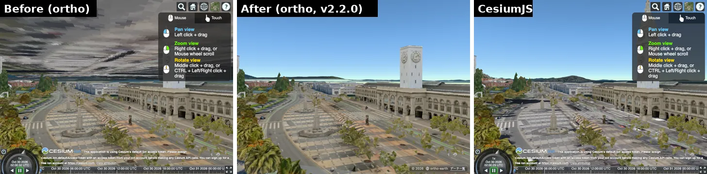
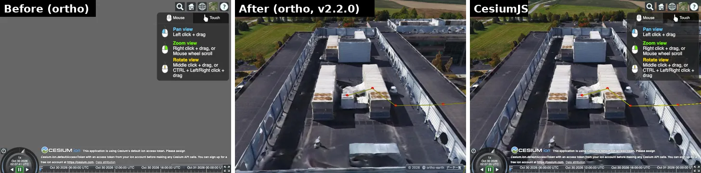
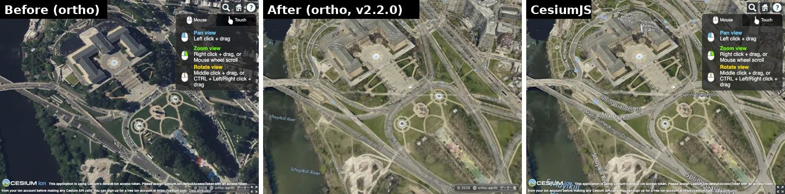
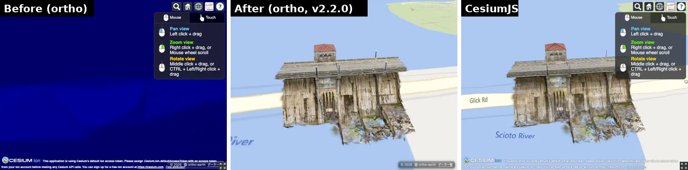

Making "something like Cesium" is not that hard. Making "a 3D engine at Cesium's level" is a different story altogether. That is how much of a god Cesium is.
Even if it is only imitation, I wanted to get one step closer to that god at a time. So I started on the unglamorous work of tracing the Sandcastle examples and crossing off, one by one, what Cesium can do and ortho-earth cannot. This is the record of that thorny road.
It reads a bit like a "Project X" documentary, but the persistence of the draftsmen (Claude) genuinely moved me!
Method
All 309 Sandcastle examples (Cesium's official examples) were run on ortho-earth. Twelve of them, such as the Moon and Mars examples, examples with no viewer and examples that start in 2D, cannot be compared and were left out. The other 297 were compared side by side with Cesium.
- ortho with Cesium's face (the facade): @ortho-earth/cesium borrows Cesium's computing parts (coordinates, time, CZML, entities, 3D Tiles loading) from Cesium as they are, and swaps only the drawing for the ortho-earth globe. "Borrow the computing parts from Cesium." That is why the Sandcastle code runs without changing a single line.
- Shoot at the same time from the same camera: open the same example on real Cesium and on ortho, shoot both at the same time (the clocks are aligned) from the same camera, and put the two pictures side by side.
- Grade in four levels: cut the screen into 64×48 cells and check how much of the colour and the edges match, and whether there are large blocks that differ.
- 3 = same picture
- 2 = same behaviour and same numeric answers, but a different picture
- 1 = part of it does not run
- 0 = does not run
- The picture has the last word: the level is a guide. The judgement is made on the pictures side by side (the Sandcastle gallery).
- Fix by family: examples broken by the same cause are grouped into a "family", and one family is fixed by one PR. After a fix, only that family's examples are re-shot on the Mac's real GPU (WebGPU) and their gallery cards replaced.
Progress
The first shoot (2026-10-25) gave 3/2/1/0 = 23/120/129/24. Only 23 of 309 drew the same picture, and I thought this was a bit of trouble. From there:
| Date | 3 | 2 | 1 | 0 | What went in |
|---|---|---|---|---|---|
| 10-25 | 23 | 120 | 129 | 24 | First shoot. Primitive, Model, particles, clouds and more stop as "not supported" |
| 10-26 | 33 | 183 | 62 | 11 | The facade (#672). Borrowing Cesium's parts, almost everything runs |
| 10-26 | 100 | 129 | 54 | 10 | CZML solids, 3D Tiles, the starry sky, a translucent globe (#698–#703) |
| 10-27 | 117 | 126 | 44 | 8 | Model lighting (#704), shadows, the blue globe, satellite orbits (#715–#720) |
| 10-28 | 124 | 121 | 43 | 9 | The horizon, near terrain, the camera target (#723–#730) |
| 10-29 | 149 | 108 | 32 | 8 | Post-processing, particles, clouds and clustering, the sea floor, lens flare, point clouds, CustomShader (to #761) |
| 10-30 | 186 | 106 | 5 | 0 | All 309 re-shot on a real GPU (UI hidden on the ortho side). Imagery draped on 3D Tiles, clipping polygons, your own GLSL (to #798) |
| v2.2.0 | 190 | 107 | 0 | 0 | All 309 re-shot in one go on a real GPU with the same code as npm 2.2.0. Negative terrain heights, the underground test, clouds (to #808) |
Note: up to 10-28 the gate forced a software GPU (SwiftShader, no WebGPU), so ortho fell back to WebGL2. From partway through 10-28 the shots were taken on the Mac's real GPU (Metal, WebGPU). The 10-29 row is the family re-shoots laid over the gallery. The 10-30 row is all 309 re-shot on a real GPU. The last row, v2.2.0, is the final count, re-shot with the same code that went to npm as 2.2.0.
Results
Re-shooting all 309 in one go with v2.2.0 (the same code as on npm, on the Mac's real GPU with WebGPU), the 297 scored examples came to 3/2/1/0 = 190 / 107 / 0 / 0. No example fails to run, none runs only in part, and every one gives the same answers as Cesium. 190 (64%) draw the same picture, eight times the 23 of the first shoot. Every picture can be seen next to Cesium's in Sandcastle.
From the left: Before (ortho), After (ortho, v2.2.0), and real Cesium.
aerometrex-san-francisco: the grey sky turned blue (colour match 50.7% → 90.2%)

sample-height-from-3d-tiles: from solid grey to the rooftops (27.7% → 98.2%)

drape-imagery-on-3d-tiles: the map is draped on the 3D Tiles (22.5% → 97.6%)

itwin-gaussian-splats: from plain blue to the building (0.0% → 91.2%)

What was built
- The Cesium-compatible facade (@ortho-earth/cesium) and the 309-example gate (shooting, grading, the gallery)
- Model lighting (the sun, HDR, environment light as spherical harmonics), shadows, day and night on the ground
- globe.material (elevation bands, contours, slope, aspect) and the sea floor (Cesium World Bathymetry)
- Screen post-processing (postProcessStages: silhouettes, bloom, black and white, night vision, lens flare, depth of field)
- Particles (ParticleSystem), clouds (CloudCollection), clustering (EntityCluster)
- 3D Tiles clipping planes, I3S, time-dynamic point clouds, panoramas, Draco-compressed point clouds
- Model colour and silhouettes, per-feature show and hide, a translucent globe and an underground camera
- Imagery draped onto 3D Tiles (imageryLayers)
- CustomShader (GLSL as is on GL, translated to WGSL on WebGPU)
- A near elevation layer, log depth precision, and WGSL uniformity fixes on WebGPU
What was given up
- 2D and Columbus view (geojson-simplestyle, multiple-synced-views, rotatable-2d-map): the globe stays 3D only, and the flat map stays Equal Earth
- VR stereo (the cardboard example's picture matches, but it does not split into stereo). Orthographic projection is approximated with a telephoto view (projection)
- Bodies other than the Earth (the Moon, Mars) and examples with no viewer
- Level 2 examples whose picture still differs (lowest colour match first): fog-post-process, 3d-tiles-feature-picking, google-streetview-panorama, video, voxel-picking, three aec examples, 3d-tiles-terrain-classification, photogrammetry-classification, ground-primitive-dev, particle-system-weather
Why upstream did not budge
In these seven days about 130 PRs (#665–#808), mostly for Cesium compatibility, went into main. Even so, the automatic deploy from main runs the full-page WebGPU and UI gates and the production-bundle gate before anything reaches production. There were regressions along the way, in WGSL, depth and clouds (#730–#734, #799), but the gates caught them, held the deploy, and they were fixed the same day.
With v2.2.0, ortho-earth can finally call itself photogenic, and its features have filled out a lot. The way to evaluate Cesium compatibility is now in place too, so I will keep polishing.
The same approach now runs Leaflet and Google Maps code on the globe as well. What shipped is in "Ortho Earth 2.2 is out".
And yet, for all this flamboyant tinkering, upstream did not budge. That is how ortho-earth is developed.